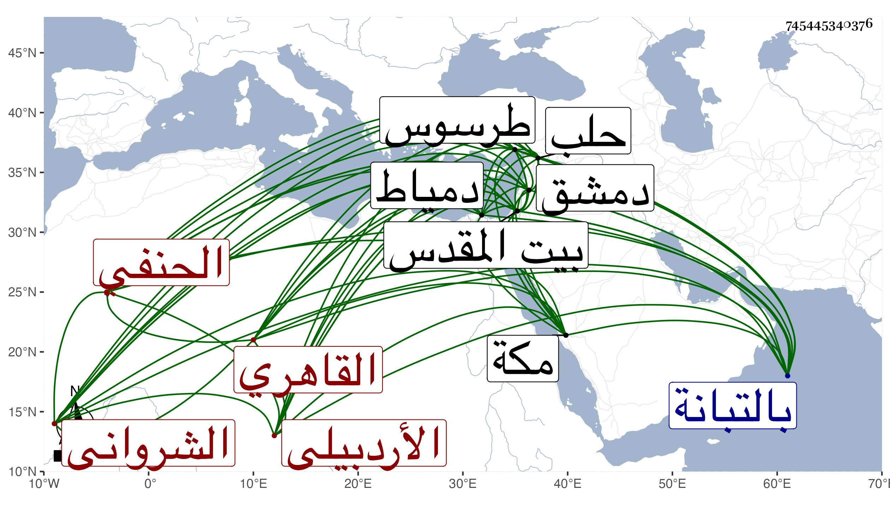

0902Sakhawi.DawLamic.ITO20230111-ara1.EIS1600.745445340376
Biography ID: 745445340376
560
محمود بن عبيد الله بن عوض بن محمد البدر بن الجلال بن التاج الأردبيلي الشرواني القاهري الحنفي الماضي أبوه وإخوته ويعرف بابن عبيد الله . ولد في منتصف صفر سنة أربع وتسعين وسبعمائة بالقرب من جامع الأزهر وانتقل مع أبيه قبل استكماله شهرين فسكن مدرسة أم السلطان بالتبانة ونشأ بها فحفظ القرآن والمختار في الفقه والأخسيكتي في أصوله وغيرها وعرض على الجلال نصر الله البغدادي والسيف الصيرامي والكمال بن العديم والعز بن جماعة في آخرين وأخذ الفقه عن الشهاب بن خاص وهو أول من أخذ عنه ووالده وانتفع به فيه وفي النحو والصرف والأصلين وغيرهما ولازم العز بن جماعة في فنون حتى مات وقارئ الهداية والتفهني وسافر صحبته إلى القدس وقرأ عليه هناك في الهداية وسمع قراءة ابن الهمام في الكشاف وكذا سمع في الهداية وغيرها على العلاء البخاري بل قرأ هو عليه في التلويح وعلى الشمس الهروي في العضد وعلى أبي الوليد بن الشحنة في الأصول وسمع عليه في مغني ابن هشام وأخذ في العربية أيضا عن الشمسين العجيمي والشطنوفي وعن ثانيهما شرح العمدة لابن دقيق العيد واجتمع بالخوافي وأخذ عنه وأكثر من الاشتغال في الفنون والأخذ عن الشيوخ وكتب له الكمال بن العديم كما رأيته بهامش قصة مؤرخة بسنة ست وثمانمائة أعزه الله تعالى بل ذكر لي أنه أقرأ تصريف العزي في حياة والده وبحضرته في التي تليها وأنه سمع الحديث على النجم بن الكشك والزين العراقي والهروي فمن بعدهم ، ودرس بأم السلطان والأبو بكرية والأيتمشية عقب أخيه محمد وبالمحمودية برغبة العيني له عنه وبالتربة اليشبكية بالصحراء بجانب تربة ياقوت الافتخاري وبجامع الأزهر بدرس خشقدم الزمام وأعاد بالألجيهية وكذا بالصرغتمشية لكنه رغب عنها خاصة لعبد البر بن الشحنة ، وولي مشيخة التصوف بالرسلانية بمنشية المهراني تلقاها عن الشمس التفهني في جهات أخرى ، وناب في القضاء عن التفهني بعد امتناعه من قبوله عن ناصر الدين بن الكمال بن العديم حين سأله فيه واستمر ينوب إلي أثناء الأيام السعدية فأعرض عنه وكان لشدته يوجه للتعازيز وإقامة الحدود ، وامتحن في أيام الظاهر جقمق بدعوى رتبها الشهاب المدني وأدخله حبس أولى الجرائم وقبل ذلك سعى في قضاء دمشق فلم يجب كما أشار إليه شيخنا في حوادث سنة أربع وأربعين من إنبائه ، وحج مرارا أولها في سنة ست عشرة وجاور في سنة ثمان وستين ودخل بيت المقدس كما تقدم وكذا سافر إلى حلب مرارا أولها صحبة العسكر سنة أربع وعشرين وآخرها سنة تسع وأربعين وتعدى إلى أن دخل طرسوس لنلزهة ودخل دمياط حين إقامة الأمير يشبك الفقيه فيه بقصد السلام عليه لمزيد اختصاصه به وقراءة الأمير عليه دهرا وكذا قرأ عليه غير واحد من الأتراك بل أخذ عنه خلق من المبتدئين وغيرهم حتى بمكة في مجاورته في الفقه وأصوله والعربية وغيرها لكونه كان حسن التعليم لا لطول باعه في العلم وصار فيمن تلمذ له غير واحد من الأعيان وكان ينتفع في إقرائه بما على كتبه من الحواشي والتقاييد التي خدمها هو أو والده بها وممن قرأ عليه الصحيح ببيت عبد العزيز ابن محمد الصغير الشهاب بن العطار وكنت ممن كثر اجتماعي معه بمجلس الأمير يشبك المذكور وسمع مني القول البديع حين أسمعته الأمير إجابة لرغبته فيه واغتبط البدر بالكتاب المذكور وحصله واستفدت منه في غضون الأسماع أشياء بل واغتبط بي أيضا ، وجاءني مرة بنفسه لدعوى عنده في الرسلانية نعم لما توجه لدمياط أخذ معه كراسة فيها أحاديث للأمير فنازعه الشهاب الجديدي فيها وأرسل يسألني عنها فبينت ما فيها من الكذب والضعف ونحو ذلك فانحرف ولم التفت لانحرافه وعلم صدق مقصدي فرجع لصداقته ، وكان عالي الهمة قائما مع من يقصده خبيرا بجلب النفع له حاد اللسان قادرا على التخجيل بالنكت ونحوها سريع الانحراف كثير التلفت لنائل من يصحبه ، وهو الذي أخر المناوي حين إرادته الصلاة على صهره ابن الهمام وقال نحن أحق بأئمتنا وقدم ابن الديري ، وممن انتفع بصحبته ابن الشحنة ورام أخذ وظائفه بعده وأظن أنه عمل هيئة نزول فما صعد وأعطيت للإمام الكركي . مات في يوم الجمعة رابع عشرى شعبان سنة خمس وسبعين رحمه الله وعفا عنه .
